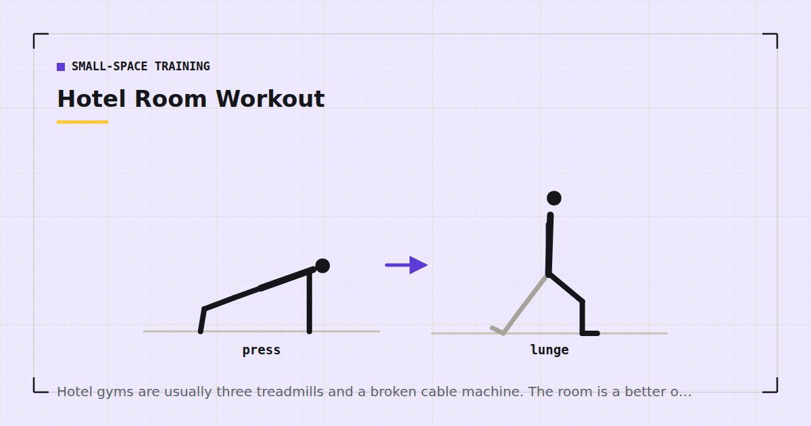

Small-Space Training
Hotel Room Workout: 20 Minutes, No Gear
Hotel gyms are usually three treadmills and a broken cable machine. The room is a better option than it looks, provided you plan around a bed, a chair and a wall.

Travel breaks training routines more reliably than almost anything else, and usually not because the room is too small. It is because there is no plan, the hotel gym is disappointing, and by the time that becomes clear it is nine in the evening.
Having one session you already know solves most of that.
What a hotel room actually gives you
Almost every hotel room, however small, provides four things:
- A strip of floor beside the bed, usually about two metres by one — enough for everything except travelling movements, per how much floor space you need.
- A bed, at a useful height for incline push-ups, elevated feet and split squats.
- A chair or desk, for dips, step-ups and rows.
- A wall, for wall sits and handstand work if the ceiling allows.
What you do not get is anything to pull against properly. A desk may allow inverted rows if it is solid, but many hotel desks are not. Accept that pulling will be under-served for a few days — it is not worth injuring yourself testing a flat-pack desk.
The 20-minute session
Two minutes of marching and easy squats to warm up. Then three rounds of the following, resting sixty seconds between rounds.
Bulgarian split squat — 8–12 each leg
Rear foot on the bed or the chair. Beds are usually too soft for a stable rear foot; the chair is better if there is one. Setup detail in Bulgarian split squats at home.
Push-up — 8–15
Floor, or hands on the bed for an incline. Feet on the bed for a decline if the floor version is easy.
Chair dip — 8–15
Hands on the chair seat, feet out in front. Check the chair does not slide — hotel chairs on hard floors often do. Safe setups in dips at home.
Single-leg glute bridge — 10–15 each side
On the floor, one-second squeeze at the top.
Pike push-up — 6–12
Feet on the floor, or on the bed to make it harder. Covers the vertical pressing pattern that nothing else here provides.
Plank shoulder tap — 30–45 seconds
Set the hands down gently rather than dropping them.
Three rounds is about eighteen minutes with the warm-up. It covers four of the five movement patterns, missing only pulling.
Using the furniture
The bed. Excellent for incline and decline push-ups, and for elevating the feet in planks. Poor for anything requiring a stable surface underfoot, because mattresses compress unevenly — a split squat with the rear foot on a soft bed is more of a balance exercise than a leg one.
The desk chair. The most useful item in the room. Dips, step-ups, split squats, incline push-ups. Test that it does not roll or slide before committing weight. If it has castors, do not use it for anything.
The desk. Sometimes solid enough for inverted rows, often not. Push down hard on the edge with both hands before getting underneath it. If it moves at all, do not.
A towel. Looped around a door handle, gives you a rowing option that requires trusting nothing but the door. This is the most reliable way to cover the pulling pattern while travelling — see rows at home.
Staying quiet
Hotel floors are frequently thin and your neighbours are often asleep at odd hours.
Nothing in the session above involves impact, which handles most of it. Two further points: set your hands down gently during shoulder taps rather than dropping them, and be aware that a hard-floored room with no carpet transmits considerably more than a carpeted one. If the room is uncarpeted, put a towel down under your hands.
Avoid anything travelling — bear crawls, skater steps — in a hotel room. Not for noise reasons but because there is nowhere to go. The wider approach is in quiet home workouts.
Training around travel fatigue
Two honest points about training while travelling.
First, sleep disruption genuinely degrades training performance, and the effects are reasonably well documented.1 A session on four hours of sleep after a long flight will be worse than usual, and pushing hard through it is a poor trade. Do the session at moderate effort and treat it as maintenance.
Second, maintenance is enough. A week or two of reduced training loses very little, and the purpose of a hotel session is to keep the routine alive rather than to make progress. Judged that way, three moderate sessions in a week away is an excellent outcome.
Never miss two planned sessions in a row. One missed session while travelling is irrelevant; two is where the routine starts unravelling, and coming home from a fortnight away having done nothing is what turns a trip into a six-week gap. This is the same mechanism described in beating the six-week drop-off.
The 10-minute version
For the evening you land at eleven. Two rounds of three exercises:
- Bulgarian split squat — 10 each leg
- Push-up — 12–15
- Plank shoulder tap — 40 seconds
Legs, chest and core in ten minutes. Deciding this version in advance is the point — the alternative is judging in the moment whether a short session is worth doing, and that decision reliably goes the wrong way when you are tired.
Structuring a week away
A single hotel session is easy. A fortnight of them, around meetings and time zones, needs a slightly different approach than your normal week.
Drop to three sessions regardless of what you do at home, and make all of them full-body. On the road, missing a session is far more likely than usual, and a full-body structure means a missed day still leaves you having trained everything — the reasoning is set out in full body vs split routines. A split, by contrast, can leave an entire region untrained for a fortnight.
Train in the morning if the trip allows it. Not because morning training is better in itself, but because evenings on a work trip are the least reliable time you own — dinners overrun, and a session scheduled for nine o'clock competes with wanting to sleep. The trade-offs are in morning vs evening workouts.
Lower the difficulty deliberately. Use variations one rung easier than you would at home, and stop every set three or four repetitions short of failure. Poor sleep, unfamiliar food and travel stress all reduce what you can recover from, and a hard session in that state buys fatigue rather than adaptation.
Finally, do not try to make up missed volume when you get home. Resume your normal programme at the week you left off, or one week earlier if the trip was long. Doubling up produces a session you recover badly from and raises the chance of missing the next one.
Where to go next
For a routine designed around repeated travel rather than a single trip, see the travel workout routine. For training in work clothes between meetings, see the office workout.
Frequently asked questions
What can I do for a workout in a hotel room?
A full strength session using the bed, a chair and a strip of floor: Bulgarian split squats, push-ups, chair dips, glute bridges, pike push-ups and plank shoulder taps. That covers four of the five movement patterns in about twenty minutes.
How do I work out in a hotel without equipment?
Use the furniture. The desk chair is the most useful item for dips, step-ups and split squats. The bed works for incline and decline push-ups. A towel around the door handle covers rowing, which is otherwise the hardest pattern to train while travelling.
How do I exercise in a hotel without disturbing neighbours?
Avoid all impact, set your hands down gently during plank work rather than dropping them, and put a towel under your hands if the room is uncarpeted. Skip travelling movements like bear crawls, which need more floor than a hotel room has anyway.
Should I train when jet-lagged?
At moderate effort, yes. Sleep disruption degrades training performance measurably, so a hard session after a long flight is a poor trade. Treat travel sessions as maintenance rather than progress — a week or two of reduced training loses very little.
How long should a hotel room workout be?
Twenty minutes for a full session, with a ten-minute version defined in advance for late arrivals. Deciding the short version beforehand matters, because judging in the moment whether a reduced session is worthwhile usually ends in skipping it.
Sources and further reading
- Bonnar D, Bartel K, Kakoschke N, Lang C. “Sleep Interventions Designed to Improve Athletic Performance and Recovery: A Systematic Review of Current Approaches.” Sports Medicine, 2018;48(3):683–703. PubMed.
- Schoenfeld BJ, Ogborn D, Krieger JW. “Dose-response relationship between weekly resistance training volume and increases in muscle mass: A systematic review and meta-analysis.” Journal of Sports Sciences, 2017;35(11):1073–1082. PubMed.
- World Health Organization. WHO Guidelines on Physical Activity and Sedentary Behaviour. 2020.
- NHS. Strength and Flex exercise plan.
Comments
Comments are not enabled yet. Add a hosted comment embed (Disqus, Commento, Giscus) inside this container when you are ready.